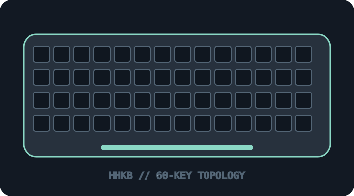

[ KEYBOARDS AND INTEGRATED POINTING DEVICES // IDENTIFIED SKU ]
HHKB Professional HYBRID Type-S (PD-KB800BS)
Compact Topre electrostatic-capacitive 60% keyboard with silent Type-S switches and Bluetooth/USB-C.

MODEL IDENTIFICATION: PD-KB800BS — charcoal / stamped US variant. Confirm the full PD-KB code and keycap legend on the underside. This archive entry identifies a real manufacturer product/variant; physical labels and dated manuals supersede generalized family descriptions.
Model specifications
| Catalog subcategory | Keyboards and integrated pointing devices |
|---|---|
| Exact model / SKU | PD-KB800BS — charcoal / stamped US variant. Confirm the full PD-KB code and keycap legend on the underside. |
| Layout and key arrangement | 60-key HHKB layout with compact Control placement and no dedicated function row, arrows or numeric keypad; functions are layer-accessed. This page covers the charcoal stamped Type-S model. |
| Switch type / mechanism | Topre electrostatic-capacitive switches, Type-S silenced construction, nominal 45 gf class. It is not a conventional Cherry MX mechanical-switch board; key feel and service parts are specific to the HHKB design. |
| Interface and protocol | Bluetooth wireless (up to four paired hosts) or USB Type-C wired connection; two AA cells power wireless operation. Type-C is not a promise of USB-C-to-USB-C compatibility with every cable/host. |
| Key rollover / anti-ghosting | Manufacturer specifies N-key rollover over USB and 6-key rollover over Bluetooth; do not treat the wireless limit as a host defect. |
| External dimensions | Approximately 294 × 120 × 40 mm; manufacturer lists roughly 540 g without batteries. Treat these as model-family dimensions and verify against regional frame/keycap variant. |
| OS and host compatibility | Manufacturer lists Windows, macOS, iOS and Android support. USB HID typing is host dependent; Bluetooth pairing and modifier/keymap choices differ by OS. Keymap Tool availability is OS/version dependent. |
| Revision / regional caveat | Do not conflate PD-KB800BS with the non-Type-S HYBRID, Classic, Type-S Snow or Japanese-layout versions. Frame material, legends, keymap, firmware, Bluetooth behavior and packaging differ by SKU/region. |
Preservation and service notes
Keep the paired-device state, DIP-switch/keymap settings and two AA cells documented. Use HHKB-specific service guidance; do not lubricate or interchange Topre assemblies as if they were MX switch modules.
Record the as-found SKU/revision, host OS and version, connection method, firmware, keymap and test method. Do not infer rollover or compatibility from the connector alone; clearly separate unpublished manufacturer specifications from tested observations.
Manufacturer sources
- HHKB Professional HYBRID product informationManufacturer specifications, variants and connection modes.
- HHKB support and FAQManufacturer pairing, keymap and product support reference.
Manufacturer pages can be revised or retired. Retain the applicable dated manual/specification with the physical equipment record.